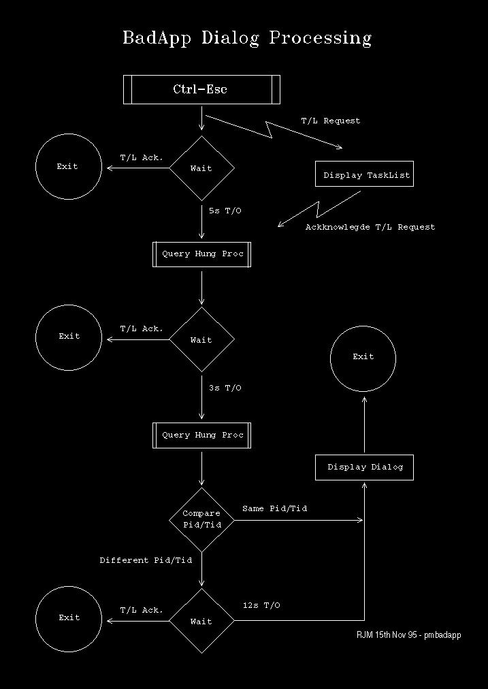
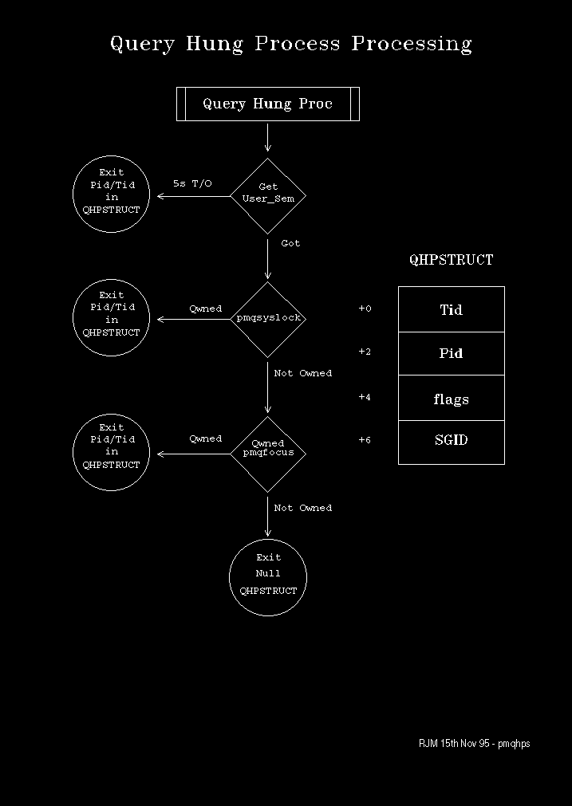

The Application Not Responding to Messages dialog, or BadApp dialog as it is sometimes referred to, appears after Ctrl-Esc has been hit and the system has not been able to display the task list.
The essential logic for this processing is as follows:
This processing is illustrated in the following two diagrams:
BadApp Dialog Logic
Query Hung Process Logic
The flags in the QHPSTRUCT indicate the detected reason for hanging. These may be a combination of:
┌────────────────────┬────────┬────────────────────────────────────────┐│Name │Bit Mask│Description │ ├────────────────────┼────────┼────────────────────────────────────────┤ │QHP_SYSQUEUELOCK │0x0001 │System Queue Locked │ ├────────────────────┼────────┼────────────────────────────────────────┤ │QHP_SENDMSGLOCK │0x0002 │Waiting for a response to WinSendMsg │ ├────────────────────┼────────┼────────────────────────────────────────┤ │QHP_CLIPBRDLOCK │0x0004 │ │ ├────────────────────┼────────┼────────────────────────────────────────┤ │QHP_WINDOWLOCKED │0x0008 │ │ ├────────────────────┼────────┼────────────────────────────────────────┤ │QHP_VISRGNLOCKED │0x0010 │ │ ├────────────────────┼────────┼────────────────────────────────────────┤ │QHP_LOCKWINDOWUPDATE│0x0020 │ │ ├────────────────────┼────────┼────────────────────────────────────────┤ │QHP_FSRSUSERHANG │0x4000 │Waiting for the User_Sem │ ├────────────────────┼────────┼────────────────────────────────────────┤ │QHP_INPUTPROCESSED │0x8000 │ │ └────────────────────┴────────┴────────────────────────────────────────┘